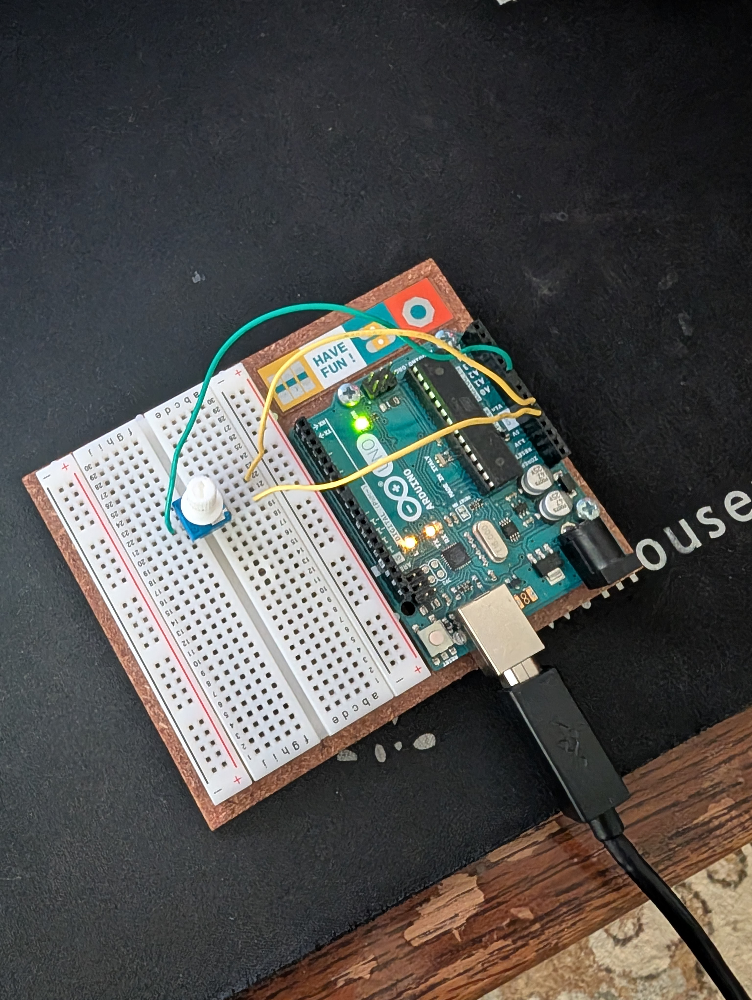

hw14 blog post
Homework 14 saw the introduction of using serial communication for interdevice communication and controlling external applications. By using just a single potentiometer, we were able to change the color of the arduino logo in processing. A serial communication was established between the application and arduino and allowed for us to stream the output of the potentiometer.
Data send over serial is usually serialized and not the same as a number or character, but a collection of them. It was very interesting to see the saw monitor in the arduino ide and see the characters it sends for each relevant potentiometer position. Then watching the response get read and deserialized to numbers.
This opens up a lot of thoughts inside my head for using arduino to control other applications and have alternate input controllers for desktop applications!!!

The setup.
 Controlling something elseee!
Circuit Diagram
Code
Controlling something elseee!
Circuit Diagram
Code